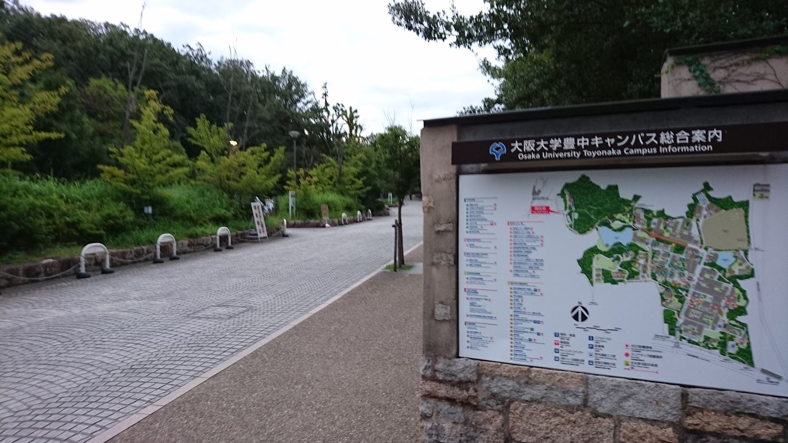
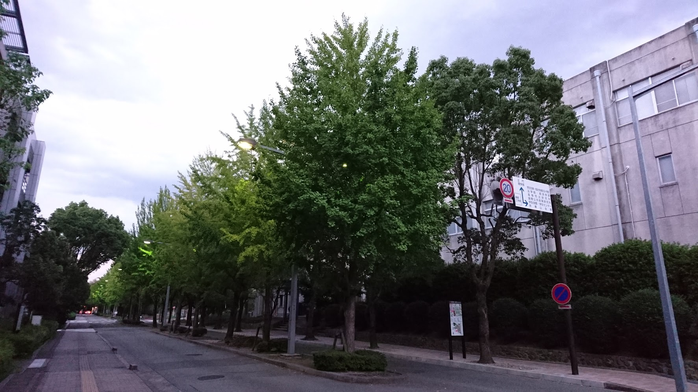
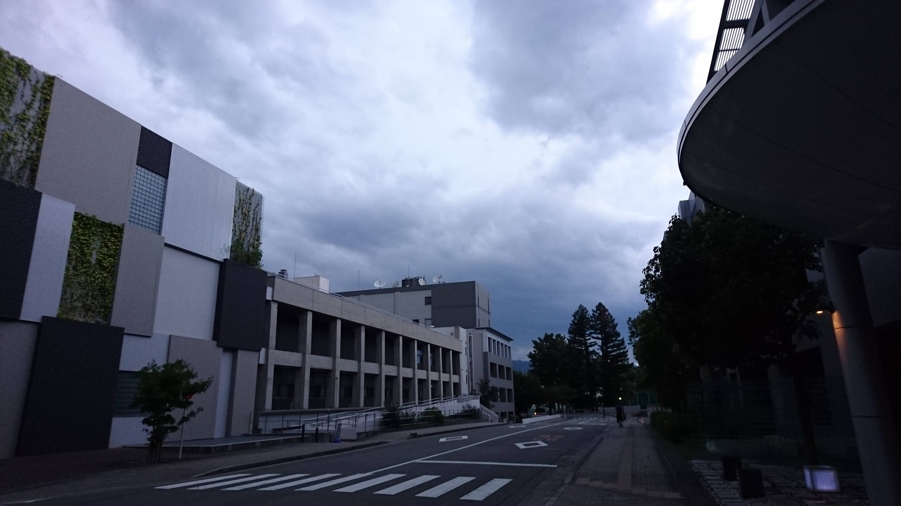

阪大散歩
～大阪大学 豊中キャンパス～
9/5 2020
カテゴリー：サークル長の自主練
 大阪大学 豊中キャンパス 正門
大阪大学 豊中キャンパス 正門
昨今の新型コロナウイルス感染症により、依然として本サークルは活動は制限されていますので、個人的に散歩をしてきました。その時巡ったところや名所をご紹介できればなと思います。
上の写真は旧帝大の一つ”大阪大学”の豊中キャンパスの正門です。
大阪大学といえば有名YouTuberはなおさんとでんがんさんの母校でもありますね。また最近では”積分サークル”チャンネルとして現役阪大生がYouTubeで動画投稿を行っています。その中で興味深い動画がありましたのでぜひご紹介させてください。
積分サークル 阪大坂に挑戦するぴろ様のご活躍ぶり 僕と同じ年の方々が学業の傍ら動画投稿していると考えると、自分には到底できない偉業であるなと常々感じます。流石一流大学である阪大生です。あっぱれ！
せっかくですので、実際に阪大坂とはどんなもんかと知りたかったので、現地へ急行しました。
積分サークルのぴろまるさんが実際に走っていた阪大坂に聖地巡礼しにいきました。なかなか距離があり、ビル型キャンパスに慣れてしまった私にはとてもしんどかったです。（涙）昔は自然豊かな広大なキャンパスで暮らしていたのに… 人間楽な方へ流れてしまうのでしょうか？
せっかく大阪大学に来たのでふらふらと散歩してきました。
  この日はあいにくお天気に恵まれず、ベストショットを撮れなかったのがとても残念です。
キャンパスに通う日々が懐かしく感じますね。法政大学も早く対面授業が行われるといいなと思います…